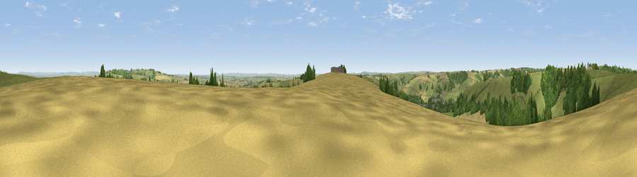

Viewpoint near Cerne Abbas
#12868 in England · top 30% of its area beats it · near Cerne AbbasThe view, rendered

A 360° render of this exact spot computed from the terrain model, tree cover and land cover — summer colours, afternoon light, calibrated against photographs of famous viewpoints. Real trees, hedges and buildings will differ in detail.
The panorama
Grey silhouette: terrain skyline in each direction (720 bearings, Earth curvature and refraction included). Dashed green: skyline with trees (+15 m) and buildings (+8 m) as obstacles. Blue strip: how far the ground is visible on each bearing.
Where the view opens
Wedge length = distance to the farthest visible ground on that bearing (vegetation-aware). Rings at 10, 25 and 50 km.
What fills the view
53% grassland · 23% woodland · 23% cropland ·
Angular shares of the visible panorama (visual magnitude), not map area. Landscape diversity 0.46 (0–1 Shannon).
Key numbers
More beautiful places nearby
The staircase of upgrades: each row has a higher view potential than everything closer. Driving times are estimates from straight-line distance, calibrated against real road routing — check an actual route before setting out.
| Place | Direction | Drive | Score |
|---|---|---|---|
| Watts Hill [Giant Hill] | NNW · 2 km | ~5 min | 67.5 |
| Viewpoint near Hilfield | NW · 5 km | ~11 min | 71.6 |
| Viewpoint near Woolland | ENE · 10 km | ~20 min | 74.5 |
| Viewpoint near North Poorton | WSW · 15 km | ~27 min | 75.4 |
| Eggardon Hill | WSW · 15 km | ~27 min | 80.3 |
| Viewpoint near Portesham | SSW · 16 km | ~28 min | 82.7 |
| Viewpoint near Abbotsbury | SW · 20 km | ~33 min | 89.0 |
| Viewpoint near West Bexington | SW · 20 km | ~34 min | 89.5 |
50.81508, -2.45524 · source: screening · position refined by local search. Computed location — check access rights before visiting.